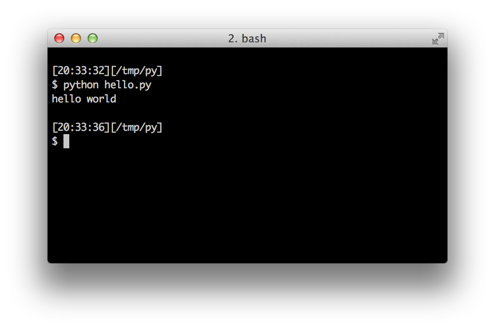

First Steps
We will now see how to run a traditional 'Hello World' program in Python. This will teach you how to write, save and run Python programs.
There are two ways of using Python to run your program - using the interactive interpreter prompt or using a source file. We will now see how to use both of these methods.
Using The Interpreter Prompt
Open the terminal in your operating system (as discussed previously in the Installation chapter) and then open the Python prompt by typing python3 and pressing [enter] key.
Once you have started Python, you should see >>> where you can start typing stuff. This is called the Python interpreter prompt.
At the Python interpreter prompt, type:
print("Hello World")
followed by the [enter] key. You should see the words Hello World printed to the screen.
Here is an example of what you should be seeing, when using a Mac OS X computer. The details about the Python software will differ based on your computer, but the part from the prompt (i.e. from >>> onwards) should be the same regardless of the operating system.
$ python3
Python 3.6.0 (default, Jan 12 2017, 11:26:36)
[GCC 4.2.1 Compatible Apple LLVM 8.0.0 (clang-800.0.38)] on darwin
Type "help", "copyright", "credits" or "license" for more information.
>>> print("Hello World")
Hello World
Notice that Python gives you the output of the line immediately! What you just entered is a single Python statement. We use print to (unsurprisingly) print any value that you supply to it. Here, we are supplying the text Hello World and this is promptly printed to the screen.
How to Quit the Interpreter Prompt
If you are using a GNU/Linux or OS X shell, you can exit the interpreter prompt by pressing [ctrl + d] or entering exit() (note: remember to include the parentheses, ()) followed by the [enter] key.
If you are using the Windows command prompt, press [ctrl + z] followed by the [enter] key.
Choosing An Editor
We cannot type out our program at the interpreter prompt every time we want to run something, so we have to save them in files and can run our programs any number of times.
To create our Python source files, we need an editor software where you can type and save. A good programmer's editor will make your life easier in writing the source files. Hence, the choice of an editor is crucial indeed. You have to choose an editor as you would choose a car you would buy. A good editor will help you write Python programs easily, making your journey more comfortable and helps you reach your destination (achieve your goal) in a much faster and safer way.
One of the very basic requirements is syntax highlighting where all the different parts of your Python program are colorized so that you can see your program and visualize its running.
If you have no idea where to start, I would recommend using PyCharm Educational Edition software which is available on Windows, Mac OS X and GNU/Linux. Details in the next section.
If you are using Windows, do not use Notepad - it is a bad choice because it does not do syntax highlighting and also importantly it does not support indentation of the text which is very important in our case as we will see later. Good editors will automatically do this.
If you are an experienced programmer, then you must be already using Vim or Emacs. Needless to say, these are two of the most powerful editors and you will benefit from using them to write your Python programs. I personally use both for most of my programs, and have even written an entire book on Vim.
In case you are willing to take the time to learn Vim or Emacs, then I highly recommend that you do learn to use either of them as it will be very useful for you in the long run. However, as I mentioned before, beginners can start with PyCharm and focus the learning on Python rather than the editor at this moment.
To reiterate, please choose a proper editor - it can make writing Python programs more fun and easy.
If you are interested in a detailed discussion on this topic, check out Finding the Perfect Python Code Editor.
PyCharm
PyCharm Educational Edition is a free editor which you can use for writing Python programs.
When you open PyCharm, you'll see this, click on Create New Project:

Select Pure Python:

Change untitled to helloworld as the location of the project, you should see details similar to this:

Click the Create button.
Right-click on the helloworld in the sidebar and select New -> Python File:

You will be asked to type the name, type hello:

You can now see a file opened for you:

Delete the lines that are already present, and now type the following:
print("hello world")
Now right-click on what you typed (without selecting the text), and click on Run 'hello'.

You should now see the output (what it prints) of your program:

Phew! That was quite a few steps to get started, but henceforth, every time we ask you to create a new file, remember to just right-click on helloworld on the left -> New -> Python File and continue the same steps to type and run as shown above.
You can find more information about PyCharm in the PyCharm Quickstart page.
Vim
- Install Vim
- Mac OS X users should install
macvimpackage via HomeBrew - Windows users should download the "self-installing executable" from Vim website
- GNU/Linux users should get Vim from their distribution's software repositories, e.g. Debian and Ubuntu users can install the
vimpackage.
- Mac OS X users should install
- Install jedi-vim plugin for autocompletion.
- Install corresponding
jedipython package :pip install -U jedi
Emacs
- Install Emacs 24+.
- Mac OS X users should get Emacs from http://emacsformacosx.com
- Windows users should get Emacs from http://ftp.gnu.org/gnu/emacs/windows/
- GNU/Linux users should get Emacs from their distribution's software repositories, e.g. Debian and Ubuntu users can install the
emacs24package.
- Install ELPY
Using A Source File
Now let's get back to programming. There is a tradition that whenever you learn a new programming language, the first program that you write and run is the 'Hello World' program - all it does is just say 'Hello World' when you run it. As Simon Cozens1 says, it is the "traditional incantation to the programming gods to help you learn the language better."
Start your choice of editor, enter the following program and save it as hello.py.
If you are using PyCharm, we have already discussed how to run from a source file.
For other editors, open a new file hello.py and type this:
print("hello world")
Where should you save the file? To any folder for which you know the location of the folder. If you don't understand what that means, create a new folder and use that location to save and run all your Python programs:
/tmp/pyon Mac OS X/tmp/pyon GNU/LinuxC:\pyon Windows
To create the above folder (for the operating system you are using), use the mkdir command in the terminal, for example, mkdir /tmp/py.
IMPORTANT: Always ensure that you give it the file extension of .py, for example, foo.py.
To run your Python program:
- Open a terminal window (see the previous Installation chapter on how to do that)
- Change directory to where you saved the file, for example,
cd /tmp/py - Run the program by entering the command
python hello.py. The output is as shown below.
$ python hello.py
hello world

If you got the output as shown above, congratulations! - you have successfully run your first Python program. You have successfully crossed the hardest part of learning programming, which is, getting started with your first program!
In case you got an error, please type the above program exactly as shown above and run the program again. Note that Python is case-sensitive i.e. print is not the same as Print - note the lowercase p in the former and the uppercase P in the latter. Also, ensure there are no spaces or tabs before the first character in each line - we will see why this is important later.
How It Works
A Python program is composed of statements. In our first program, we have only one statement. In this statement, we call the print statement to which we supply the text "hello world".
Getting Help
If you need quick information about any function or statement in Python, then you can use the built-in help functionality. This is very useful especially when using the interpreter prompt. For example, run help('len') - this displays the help for the len function which is used to count number of items.
TIP: Press q to exit the help.
Similarly, you can obtain information about almost anything in Python. Use help() to learn more about using help itself!
In case you need to get help for operators like return, then you need to put those inside quotes such as help('return') so that Python doesn't get confused on what we're trying to do.
Summary
You should now be able to write, save and run Python programs at ease.
Now that you are a Python user, let's learn some more Python concepts.
1. the author of the amazing 'Beginning Perl' book ↩